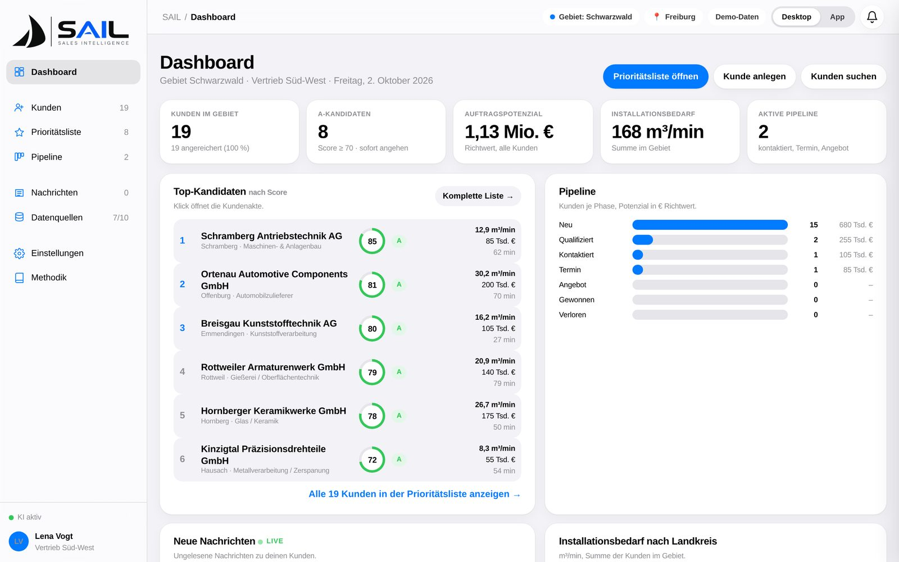
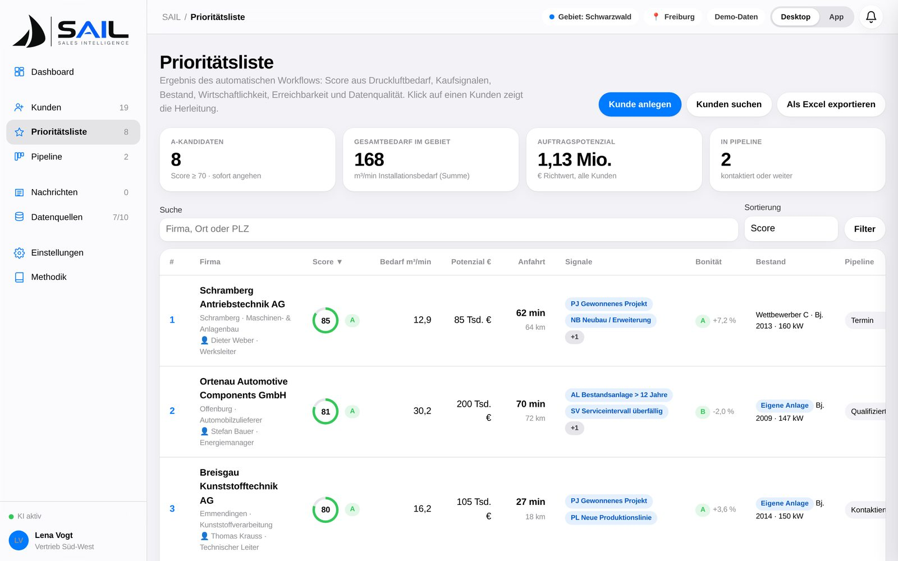
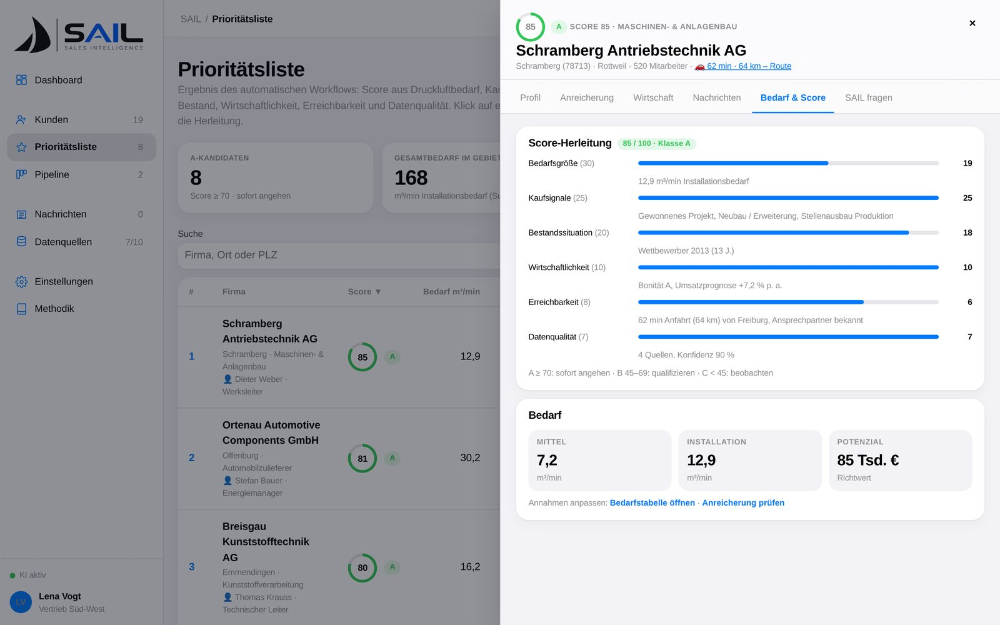
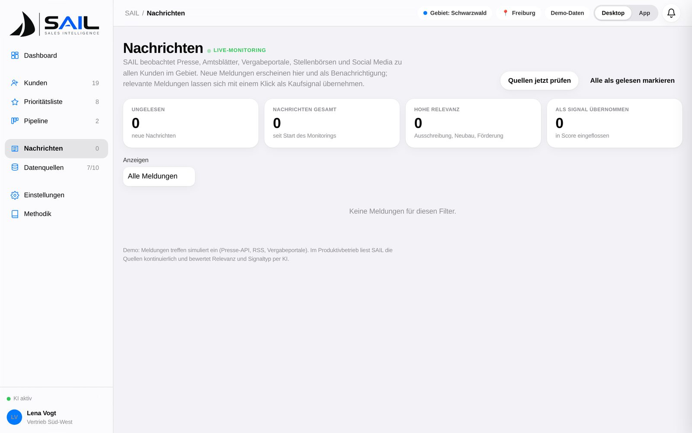

SAIL tells your field sales team which companies in their territory need what you sell – and why. Enriched from public data, demand inferred per site by our proprietary model, ranked by opportunity, briefed before every visit.
SAIL zeigt Ihrem Außendienst, welche Unternehmen im Gebiet brauchen, was Sie verkaufen – und warum. Angereichert aus öffentlichen Daten, Bedarf je Standort per eigenem Inferenzmodell abgeleitet, nach Chance priorisiert, vor jedem Besuch gebrieft.
Works with your existing CRM · GDPR-compliant · Hosted in the EU
Funktioniert mit Ihrem bestehenden CRM · DSGVO-konform · Hosting in der EU

steps from company name to visit briefing
Schritte vom Firmennamen zum Besuchsbriefing
public and internal data sources per account
öffentliche und interne Datenquellen je Kunde
transparent score dimensions, calibrated per customer
transparente Score-Dimensionen, kundenspezifisch kalibriert
from Excel upload to ranked priority list
vom Excel-Upload zur fertigen Prioritätsliste
Your best salespeople spend most of their week guessing.
Ihre besten Vertriebler verbringen die meiste Zeit mit Raten.
Industrial territories hold thousands of plants. Which ones are expanding? Which run three shifts on a compressor fleet from 2009? Which just won a tender that needs new capacity? Today that knowledge lives in scattered news, registers and the heads of a few veterans.
Ein Vertriebsgebiet umfasst tausende Betriebe. Welche expandieren? Welche fahren drei Schichten auf einer Kompressorstation von 2009? Wer hat gerade eine Ausschreibung gewonnen, die neue Kapazität braucht? Dieses Wissen steckt heute verstreut in Nachrichten, Registern und den Köpfen weniger Routiniers.
Cold lists, no context
Kalte Listen ohne Kontext
Bought address lists tell you a company exists – not whether it needs compressed air, how much, or when.
Gekaufte Adresslisten sagen, dass ein Betrieb existiert – nicht, ob er Druckluft braucht, wie viel und wann.
Hours of manual research
Stunden manueller Recherche
Website, register, news, LinkedIn, the CRM history – every visit starts with the same 40 minutes of digging.
Website, Register, News, LinkedIn, CRM-Historie – jeder Besuch beginnt mit denselben 40 Minuten Suche.
Missed signals
Verpasste Signale
The extension permit, the new plant manager, the energy-efficiency subsidy: buying windows close before anyone notices.
Die Baugenehmigung, der neue Werksleiter, die Effizienzförderung: Kauffenster schließen sich, bevor es jemand bemerkt.
One automated workflow. Four steps. Zero spreadsheets.
Ein automatischer Workflow. Vier Schritte. Keine Tabellen.
Add a company – by name, by Excel import or by searching a city and radius – and SAIL runs the whole chain on its own.
Fügen Sie ein Unternehmen hinzu – per Name, Excel-Import oder Gebietssuche mit Stadt und Radius – und SAIL durchläuft die gesamte Kette automatisch.
Capture
Erfassen
Type a name, drop an Excel list or search a territory by city + radius or postcode. Duplicates are merged automatically.
Name eintippen, Excel-Liste ablegen oder Gebiet per Stadt + Radius bzw. PLZ durchsuchen. Dubletten werden automatisch zusammengeführt.
Enrich
Anreichern
Website, company registers, news, tenders, financial outlook, decision makers and your own installed-base data – gathered and cited.
Website, Handelsregister, Nachrichten, Ausschreibungen, Wirtschaftsprognose, Entscheider und Ihre eigenen Bestandsdaten – gesammelt und mit Quelle.
Infer demand
Bedarf ableiten
Industry, products, vertical integration, headcount and shifts feed our proprietary inference model, whose weights are calibrated to your customer base – every factor stays visible.
Branche, Produkte, Fertigungstiefe, Mitarbeiter und Schichten fließen in unser eigenentwickeltes Inferenzmodell, dessen Gewichte kundenspezifisch kalibriert werden – jeder Faktor bleibt sichtbar.
- Mittlerer BedarfAverage demand7,2m³/min
- SpitzenbedarfPeak demand9,4m³/min
- InstallationsbedarfInstallation demand12,9m³/min
Prioritise & act
Priorisieren & handeln
A 0–100 score ranks every account. Live news, travel time from where you are and an AI briefing get you ready for the visit.
Ein Score von 0–100 ordnet jeden Kunden ein. Live-Nachrichten, Fahrzeit vom aktuellen Standort und ein KI-Briefing bereiten den Besuch vor.

From public features to demand – calibrated to you.
Von öffentlichen Merkmalen zum Bedarf – auf Sie kalibriert.
Our proprietary inference model turns the features gathered during enrichment into average, peak and installation demand. Its weights are calibrated per customer on installed base, service history and verified sites – and every correction from the field flows back in.
Unser eigenentwickeltes Inferenzmodell übersetzt die bei der Anreicherung gesammelten Merkmale in Mittel-, Spitzen- und Installationsbedarf. Seine Gewichte werden je Kunde auf Bestandsanlagen, Servicehistorie und verifizierten Standorten kalibriert – und jede Korrektur aus dem Feld fließt zurück.

Every score comes with its reasoning.
Jeder Score kommt mit seiner Begründung.
SAIL never says “trust me”. The priority score is built from six weighted dimensions, and each one shows the facts behind it – so a sales rep can challenge, correct and learn.
SAIL sagt nie „vertrau mir“. Der Score setzt sich aus sechs gewichteten Dimensionen zusammen, und jede zeigt die Fakten dahinter – damit Vertriebler hinterfragen, korrigieren und lernen können.
- Demand (30) · Buying signals (25) · Installed base (20)Bedarf (30) · Kaufsignale (25) · Bestandssituation (20)
- Financial outlook (10) · Reachability (8) · Data quality (7)Wirtschaftlichkeit (10) · Erreichbarkeit (8) · Datenqualität (7)
- Classes A / B / C with clear thresholds – A means “call this week”Klassen A / B / C mit klaren Schwellen – A heißt „diese Woche anrufen“
- Model weights calibrated per customer – on your installed base and verified sitesModellgewichte je Kunde kalibriert – auf Ihren Bestandsanlagen und verifizierten Standorten

News that becomes a sales signal – not noise.
Nachrichten, die zum Verkaufssignal werden – statt Rauschen.
Four SAIL agents work in the background – Scout, Verifier, Calibrator and Briefer – and watch press, registers and tender portals for every account in your territory. A new plant, a hired energy manager or a sustainability report lands as a notification, is linked to the account and can be taken over into the score with one click.
Vier SAIL-Agenten arbeiten im Hintergrund – Scout, Prüfer, Kalibrierer und Briefer – und beobachten Presse, Register und Ausschreibungsportale für jeden Kunden im Gebiet. Ein neues Werk, ein eingestellter Energiemanager oder ein Nachhaltigkeitsbericht kommt als Benachrichtigung, ist dem Kunden zugeordnet und wandert per Klick in den Score.
- Notifications in the app – read, mark, actBenachrichtigungen in der App – lesen, markieren, handeln
- Each item visible in the account record with its sourceJede Meldung in der Kundenakte, mit Quelle
- Economic outlook per company: growth, credit class, 3-year forecastWirtschaftliche Prognose je Unternehmen: Wachstum, Bonität, 3-Jahres-Ausblick
- Agents propose, the sales rep confirms – how the agents workAgenten schlagen vor, der Vertriebler bestätigt – so arbeiten die Agenten
Desktop for planning. One tap for the road.
Desktop zum Planen. Ein Tipp für unterwegs.
Switch to the Go mode and SAIL becomes a focused mobile app: today's priorities, the account at a glance, phone / e-mail / LinkedIn of the right contact, route in Google Maps. Same data, same workflow – one tap away.
Mit dem Umschalter wird SAIL zur fokussierten mobilen App: die Prioritäten von heute, der Kunde auf einen Blick, Telefon / E-Mail / LinkedIn des richtigen Ansprechpartners, Route in Google Maps. Gleiche Daten, gleicher Workflow – einen Tipp entfernt.
- Sort by score, demand or travel time; filter by postcode, city + radius, industrySortieren nach Score, Bedarf oder Fahrzeit; Filter nach PLZ, Stadt + Radius, Branche
- Add a new company on site – the workflow runs in the backgroundNeuen Betrieb vor Ort anlegen – der Workflow läuft im Hintergrund
- Suggestions from the territory you defineVorschläge aus dem Gebiet, das Sie festlegen
Built for capital goods with a demand you can model.
Gebaut für Investitionsgüter mit modellierbarem Bedarf.
Our first deployment is compressed air. A plant's demand follows from its industry, production share, shifts and vertical integration – exactly the features SAIL extracts and feeds into its inference model. The same engine applies to pumps, drives, filtration, industrial gases or any product where demand scales with what a plant makes.
Unser erster Einsatz ist Druckluft. Der Bedarf eines Werks folgt aus Branche, Produktionsanteil, Schichten und Fertigungstiefe – genau diese Merkmale extrahiert SAIL und gibt sie in sein Inferenzmodell. Dieselbe Engine passt für Pumpen, Antriebe, Filtration, Industriegase oder jedes Produkt, dessen Bedarf mit der Fertigung skaliert.
Demand in m³/min
Bedarf in m³/min
Average, peak and installation demand per site, incl. leakage and reserve.
Mittel-, Spitzen- und Installationsbedarf je Standort, inkl. Leckage und Reserve.
Energy & budget
Energie & Budget
Power, annual energy cost and investment indication – a conversation starter in numbers.
Leistung, jährliche Energiekosten und Invest-Indikation – ein Gesprächseinstieg in Zahlen.
Installed base
Bestandssituation
Own customer, competitor fleet and its age – from your CRM or from signals.
Eigener Kunde, Wettbewerbsanlage und deren Alter – aus Ihrem CRM oder aus Signalen.
Product fit
Produktpassung
Optional: map the demand to your own product series for a first recommendation.
Optional: Bedarf auf Ihre eigene Produktreihe abbilden – für eine erste Empfehlung.
See SAIL on your own territory.
Sehen Sie SAIL auf Ihrem eigenen Gebiet.
Send us a region and a product – we'll run the workflow on real companies and walk you through the results in 30 minutes.
Nennen Sie uns eine Region und ein Produkt – wir lassen den Workflow auf echten Unternehmen laufen und gehen die Ergebnisse in 30 Minuten mit Ihnen durch.